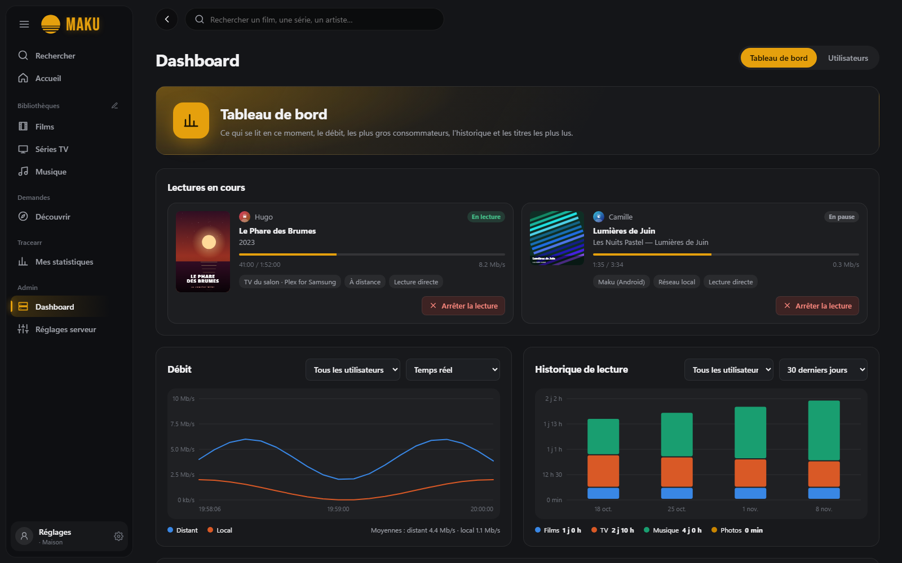
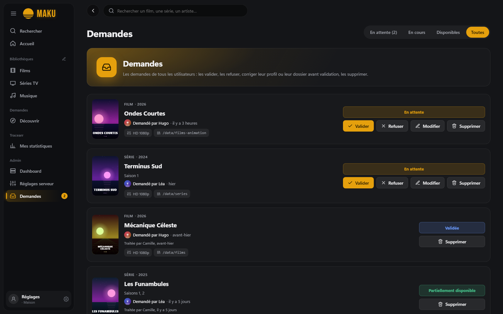

Accueil › Fonctionnalités › Pour l'administrateur
Pour l'administrateur du serveur
Votre serveur, piloté depuis la même application.
Si vous êtes le propriétaire du serveur Plex, Maku vous donne en plus une catégorie Admin : ce qui se lit en ce moment, qui consomme quoi, vos utilisateurs, les réglages du serveur et, si vous administrez Seerr, les demandes à valider. Sur ordinateur, tablette et téléphone, sans ouvrir de navigateur.

Le tableau de bord
Tout ce qui se passe, en direct
- Lectures en cours de tous les utilisateurs : jaquette, appareil, réseau local ou à distance, lecture directe ou conversion, et la position qui avance chaque seconde.
- Arrêter une lecture avec un message pour la personne (Plex Pass).
- Le débit en temps réel, ou sur 24 heures et 30 jours, distant et local.
- Le top des utilisateurs, avec leur temps par type (films, séries, musique, photos).
- L'historique de lecture par semaine et par type, et les plus lus : films, séries et artistes.
- L'entretien de chaque bibliothèque : rechercher les nouveaux fichiers, vider la corbeille.
Pour l'administrateur de Seerr
Les demandes de vos utilisateurs, traitées sans quitter Maku
Si votre compte administre Seerr (ou a le droit de gérer les demandes), Maku ajoute Demandes dans la catégorie Admin, avec une pastille qui compte celles qui attendent votre réponse. Avec Plex, Jellyfin ou Emby, sur ordinateur, tablette et téléphone.
- Valider ou refuser une demande en un geste : elle part aussitôt vers Radarr ou Sonarr.
- Corriger avant de valider : le serveur de destination, le profil de qualité et le dossier, si la personne s'est trompée. « Enregistrer et valider » fait les deux d'un coup. Seerr n'accepte ces changements que tant que la demande est en attente.
- Relancer une demande dont l'envoi a échoué, et supprimer une demande, après confirmation.
- Tout l'historique : en attente, en cours, disponibles, avec qui a demandé, quand, et qui l'a traitée.

Les utilisateurs
La liste des comptes avec qui le serveur est partagé, et pour chacun trois onglets : ses bibliothèques, une par une ; ses autorisations (téléchargements, sous-titres…) ; ses restrictions de contenu. Invitez un ami par son adresse ou son nom d'utilisateur, ou retirez un accès.
Les réglages du serveur
Général, Bibliothèque, Réseau, Transcodeur, DLNA, Bonus et Tâches planifiées : chaque rubrique a son bandeau et ses réglages en tuiles, avec les réglages avancés sur demande.
Les fiches à modifier
Titre, résumé, dates, genres, affiche et fond d'écran d'un film, d'une série ou d'un album : parmi les images proposées, depuis une adresse web, ou glissées depuis l'ordinateur. Un champ modifié est verrouillé, pour que l'actualisation des métadonnées ne l'écrase pas. Sur ordinateur.
Les collections intelligentes
Composez une collection avec des règles (titre contient « nuit », année après 2000, genre est…) et voyez dans la grille les titres qu'elle contiendra. Le serveur la tient ensuite à jour. Rangez une saga dans l'ordre de son histoire en glissant les jaquettes. Sur ordinateur.
Invitations
Vos proches configurés en un QR code
Dans Réglages → Services, Inviter des utilisateurs produit un QR code, et le code équivalent, qui contiennent les adresses de Seerr et de Tracearr, sans aucun identifiant. Envoyez-le par message.
- Sur ordinateur, la personne colle le code ou importe l'image.
- Sur téléphone, elle choisit la capture dans ses photos.
- Sur la télé, Maku affiche son propre QR code : scanné par le téléphone, il ouvre une page où prendre en photo l'invitation. La télé se configure aussitôt.
- Maku enregistre les adresses, se connecte à Seerr et lance la connexion à Tracearr.
Seerr et Tracearr, sans les exposer
Maku Server est un petit relais à installer à côté de votre serveur, en une commande Docker. Seerr et Tracearr restent sur votre réseau local : seul le relais est joignable, et il ne laisse passer que les utilisateurs de votre serveur.
Installer Maku Server →Qui voit la catégorie Admin ? Seulement le propriétaire du serveur Plex selon plex.tv : ni les membres du Plex Home, ni les amis. Chaque action est vérifiée par le serveur lui-même. La catégorie est dans le menu de gauche sur ordinateur et tablette, et sous les bibliothèques de l'onglet Bibliothèques sur téléphone ; elle n'est pas sur la télé.